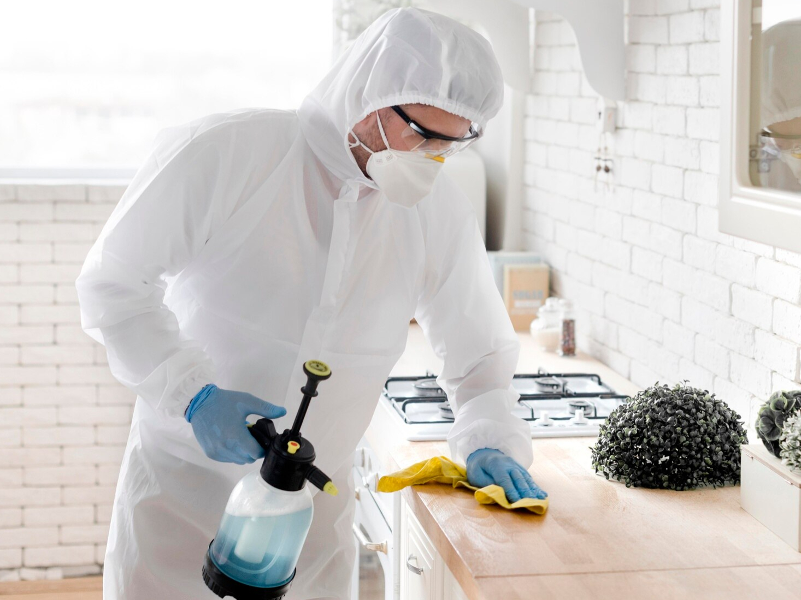

Profi Hunt - профессиональная служба дезинфекции в Самаре
Мы успешно боремся с нежелательными насекомыми уже более 15 лет. У нас огромный ассортимент профессионального оборудования, от гелевых пистолетов до генераторов холодного тумана. Мы также заботимся о Вашем здоровье, используя только профессиональные импортные препараты, имеющие класс опасности не ниже 4-го - малоопасные вещества. Вот почему нас выбирают клиенты, и остаются довольны проделанной работой.
-

Эффективность
Для обработки квартир от тараканов и клопов мы используем препараты последнего поколения со стойким инсектоакарицидным действием, которые дают максимальный эффект. Никакой кустарщины, только проф. средства дезинсекции!
-
Безопасность
Все препараты, которые мы используем, прошли сертификацию на гипоаллергенность и безвредность. Абсолютно безопасны для человека и животных. Не оставляют после удаления запаха и следов.
-

Качество
Мы выполняем свою работу на результат. А результатом считаем тотальное уничтожение «усатого» противника. Подбираем оптимальную дозировку препарата и обрабатываем каждый уголок, в котором прячутся Ваши надоедливые «соседи».
-
Опыт
С 2012 года мы избавляем клиентов от паразитов (тараканов, клопов, комаров) по всей Самарской области. За это время мы приобрели колоссальный опыт «военных действий» в самых жестких условиях — захламленных коммунальных квартирах, ветхих домах и складских помещениях.
-
Гарантия
Мы даем честную гарантию на свои услуги в течении 3-х месяцев. Если соблюдены условия гарантийного периода, а проблема осталась — дезинсектор приедет к Вам и устранит недочет бесплатно.
-
Быстро и удобно
Средняя продолжительность обработки — всего 25 минут. Мы подберем для Вас удобный день недели и время. Работаем по всей Самаре, в том числе приедем в отдаленные районы и соседние города и поселки (Кинель, Новокуйбышевск, Чапаевск, Смышляевка, Алексеевка и др.).
-
Доступная стоимость
Наш многолетний опыт работы позволяет закупать препараты у поставщиков на хороших условиях, поэтому мы предоставляем своим клиентам цены ниже рыночного диапазона. Также, у нас есть дополнительные скидки: — 10% при коллективной обработке от 3-х квартир.
-
Отзывы клиентов
В группе в VK Вы можете ознакомиться с реальными отзывами наших клиентов и при желании, задать любому из них, интересующие вопросы.
-

Уничтожение тараканов в квартире
Комплексная обработка всех поверхностей, включая санузел, жилые комнаты и кухню, методом холодного тумана.
от 2 500 р.1. Проведите влажную уборку – вымойте полы, протрите пыль на поверхностях, подоконниках и плинтусах для лучшего контакта препарата с поверхностями.
2. Заклейте вентиляционные решётки плотной бумагой и скотчем, чтобы предотвратить миграцию насекомых.
3. Уберите все источники пищи – вынесите мусор, убедитесь, что под раковиной и в углах нет остатков еды.
4. Проверьте сантехнику – устраните протечки кранов, чтобы лишить тараканов доступа к воде.
5. Изолируйте продукты и личные вещи – упакуйте их в герметичные пакеты. Кухонные шкафы также подлежат обработке.
6. Обеспечьте доступ к стенам – отодвиньте мебель для более тщательного нанесения препарата.
7. Уберите животных – выведите питомцев из квартиры, аквариум накройте крышкой и отключите компрессор.
8. Согласуйте обработку с соседями – совместная дезинсекция повысит эффективность.
Чем тщательнее подготовка – тем лучше результат!
-
Уничтожение постельных клопов в квартире
Обработка проводится методом холодного тумана в местах потенциального обитания насекомых для максимальной эффективности, а именно все спальные поверхности, периметр комнат, тыльные стороны мебели.
от 3 000 р.1. Обработка вещей
• Постельное бельё, одежду, шторы:
- Постирать при 60-90°C
- Нестираемые вещи: заморозить (-20°C, 2-3 дня) или обработать паром
• Мягкую мебель, матрасы:
- Пропылесосить швы (мешок выбросить)
- Обработать паром
- Снять и постирать чехлы
• Ковры, пледы, игрушки: обработать паром2. Подготовка помещения
• Освободить периметр:
- Отодвинуть мебель от стен (20-30 см)
- Снять картины, зеркала, розетки
• Разобрать спальные места:
- Снять матрасы
- Проверить стыки и щели
• Упаковать:
- Косметику, продукты - в пакеты/холодильник
- Книги, технику - изолировать3. Перед обработкой
• Провести влажную уборку (без хлора)
• Убрать детей и животных
• Отключить/накрыть аквариум4. После обработки
• Не мыть поверхности 3-5 дней
• Проветрить через 3 часа
• Постельное бельё - только после стиркиВажно: Чем тщательнее подготовка - тем эффективнее результат.
-

Гелевая обработка от тараканов
Профессиональное нанесение инсектицидных гелей для уничтожения тараканов в квартирах, офисах, магазинах. Безопасно для людей и животных, долговременный эффект, точечное нанесение в местах скопления вредителей.
от 3 500 р.1. Гигиена
- Уберите крошки и остатки еды
- Вынесите мусор
- Протрите поверхности от жира (для лучшего прилипания геля)2. Доступ к зонам нанесения
- Освободите плинтусы и углы
- Отодвиньте мебель от стен на 5-10 см3. Особые условия
- Не мыть полы 2-3 дня до/после обработки
- Не использовать аэрозоли параллельно с гелемВажно:
• Гель наносится точечно в местах перемещения тараканов (стыки мебели, вентиляция, задние стенки техники)
• Препарат работает 3-4 недели – не смывать!Гелевая обработка не требует масштабной подготовки – это её главное преимущество.
-
Профессиональная обработка от грибка и плесени
Профессиональная обработка обеспечивает полное уничтожение плесени и грибка во всех проблемных зонах: на стенах и потолках, в угловых стыках, ванных комнатах, подвальных помещениях и на балконах.
от 3 000 р.1. Освободите обрабатываемые поверхности
- Уберите мебель и предметы интерьера от пораженных стен/потолков
- Снимите ковры, картины и декоративные элементы2. Обеспечьте доступ к очагам плесени
- Отодвиньте технику и шкафы
- Демонтируйте при необходимости навесные конструкции3. Проведите предварительную очистку
- Сухой щеткой удалите видимые плесневые образования
- Протрите поверхности от пыли и грязи4. Подготовка коммуникаций
- Устраните источники сырости (протечки, конденсат)
- Обеспечьте возможность проветривания после обработки5. Меры предосторожности
- На время обработки удалите из помещения детей и животных
- Упакуйте продукты питания и посудуПосле обработки рекомендуется не пользоваться помещением 6-8 часов для полного высыхания составов. Оптимальный результат достигается при комплексном подходе - устранении причин сырости совместно с антигрибковой обработкой.
Профессиональные препараты гарантируют уничтожение не только видимой плесени, но и ее спор в глубине материалов.